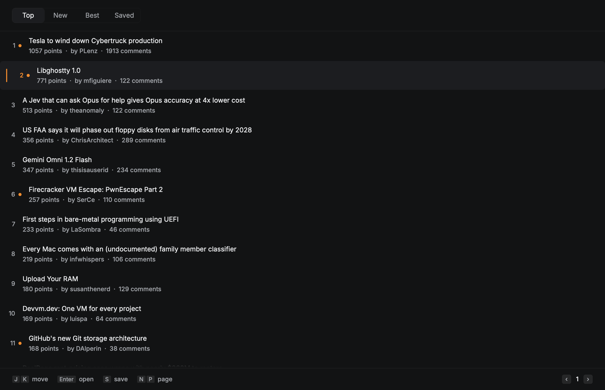
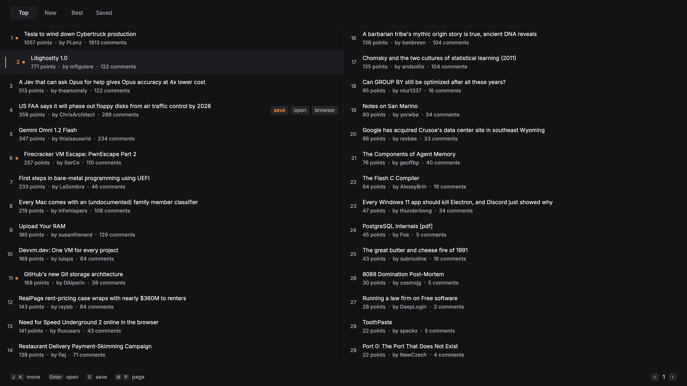
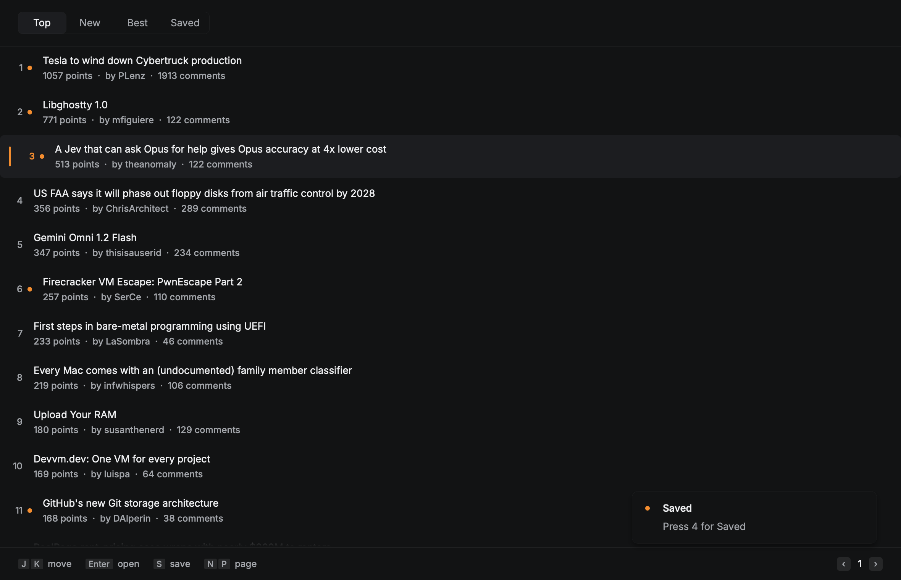
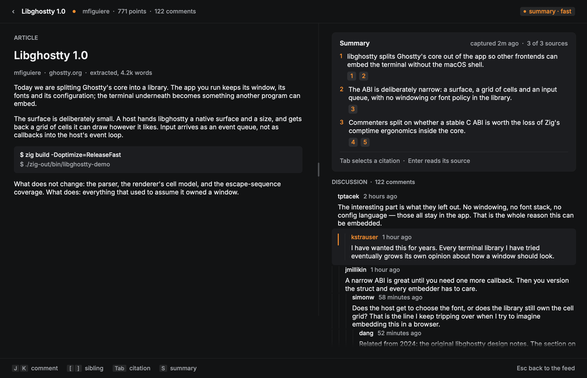
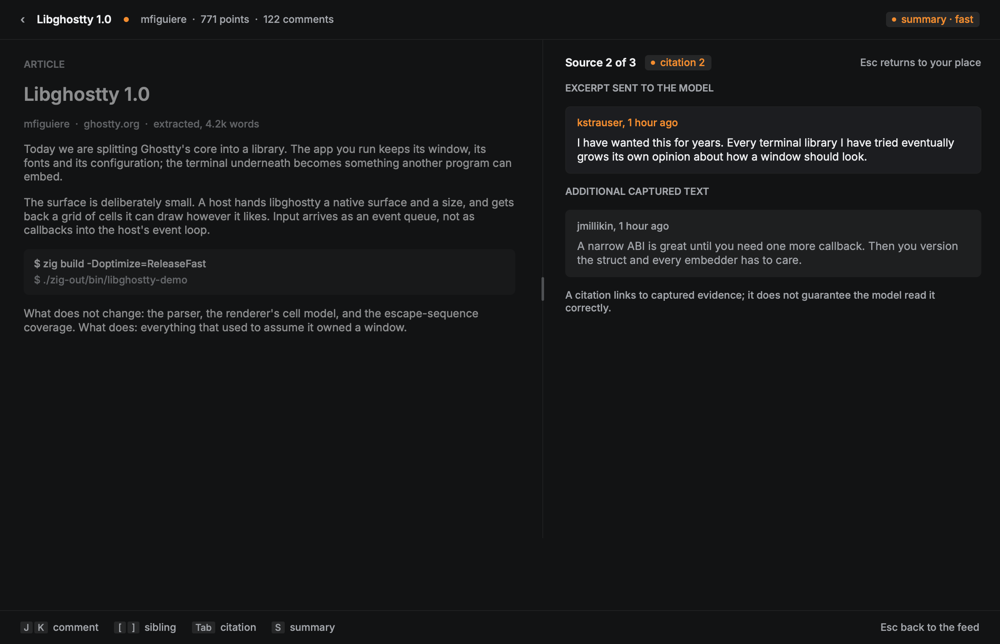
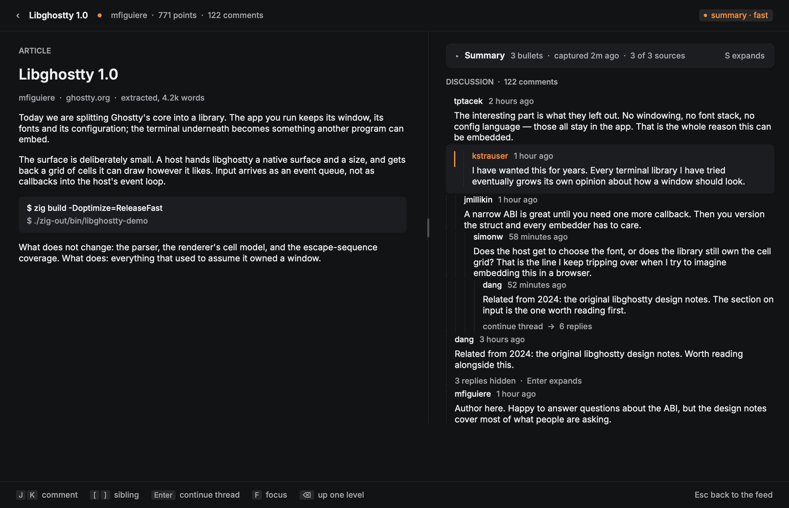
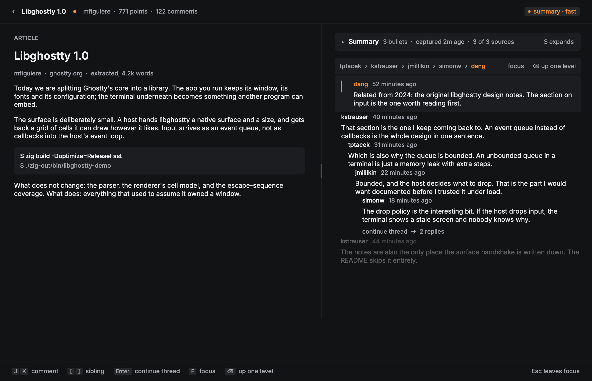

hn · desktop design · Rune
The terminal app keeps its keyboard. The desktop app adds what a window can do that a
80×24 grid cannot: two panes side by side, an article you can actually read, comment
threads with real indentation, and a summary that streams in place instead of repainting a block of
text. Every element below is drawn with a component that exists in Rune at
53c7f60 — the same rev prototypes/rune-hn pins.
Seven of these screens are real frames from prototypes/rune-mocks: a Rune app at the
pinned rev, rendered headlessly with --snap. The HTML mocks below cover the states a
static frame cannot show.

SegmentedControl tabs, a saved dot
beside the rank, Keybind hints and the ‹ 1 › stepper in the footer.
c × rows + r, so j runs straight down the left column and then down the
right — never sideways. The grid is filled from the visible capacity
(pagesNeeded = ceil(rows × 2 / 30)), so the right column is never half empty. One
shared scroll, a hairline between the columns, hover actions on the right edge only.
Toast carries the words and then leaves. Nothing persists on the row's right edge.

0.55 behind it.
3 replies hidden, and a
continue thread → 6 replies row where the cap bites.
Ten states, side by side. Each card carries its interaction notes (mouse and keyboard) and the motion it uses, named by Rune's spring tokens.
Today we are splitting Ghostty's core into a library. The app you run keeps its window, its fonts and its configuration; the terminal underneath becomes something another program can embed.
The surface is deliberately small. A host hands libghostty a native surface and a size, and gets back a grid of cells it can draw however it likes. Input arrives as an event queue, not as callbacks into the host's event loop.
What does not change: the parser, the renderer's cell model, and the escape-sequence coverage. What does: everything that used to assume it owned a window.
PaneMotion on SETTLE 0.3/0, scale_with_width(480, .15, .3).GLIDE 0.32/0 slide, contents fade over the last 15%.SNAP 0.25/0 on the chip fill; the summary pin is sticky, so it never moves.REDUCED_FADE 0.15 s.SETTLE 0.3/0 on fill and the amber edge.INSTANT 0.1/0 — pointer-tied, never lags the hand.POPs 0.25/0.15 beside the rank; the toast fades in and leaves after 2.4 s.GLIDE 0.32/0 offset on the list; reduced motion crossfades only.c × rows + r, so ranks 1–15 fill the left column and 16–30 the right. j runs straight down a column and never alternates sideways.visibleCells = visibleRows × cols, pagesNeeded = ceil(visibleCells / pageSize).ceil(38 / 30) = 2 pages fetched, so the right column is never half empty.REFLOW 0.4/0; the selection keeps its story, not its row.GLIDE 0.32/0 offset across both columns at once.growth 0.32/0 with streaming(true); appended words fade in 20 → 5.5 ms.SETTLE card plus a Toast; retry press uses press_scale(0.97).GLIDE 0.32/0; the article dims to 0.55 rather than moving.REFLOW 0.4/0 on height; the chevron turns on SNAP.INSTANT 0.1/0. Link chooser: MORPH 0.3/0.16 out of the row.0.35. Nothing is hidden, so nothing has to be found again.GLIDE 0.32/0 on the scroll offset, rows crossfading on REDUCED_FADE.SNAP 0.25/0 on the strip's width. The strip itself has no motion — it follows the offset.REFLOW 0.40/0 on the dimmed subtrees' opacity; the chain does not move.0.35 without disappearing.GLIDE 0.32/0 on the offset; the trail segment leaves on SNAP.REFLOW 0.40/0 on opacity. The focused row never moves.REFLOW, so the click target does not move under the pointer.REFLOW 0.40/0 on height; the chevron turns on SNAP 0.25/0.saved.json.REFLOW 0.4/0 closes the gap after the row fades.M form, unchanged.MORPH 0.3/0.16 out of the toolbar button; backdrop dims over 0.15.SNAP 0.25/0. Segment indicator: SNAP.MORPH 0.3/0.16; backdrop dims over 0.15.Three things the first pass showed and this one does not. Each was either false precision or the same fact stated twice.
The feed tab already says which list you are on, and a refresh is visible in the list itself. A badge that is always on is decoration, not status.
was: an amber "live" pill in the top-right cornerThe HN API returns a page of ids and no total, so "of 3" was invented. The stepper shows the one number that is known: ‹ 1 ›.
The toolbar is navigation only — the feed tabs. Key hints live in the footer, the pointer model lives in these notes, and the titlebar names the app. Nothing is stated twice.
was: a toolbar wordmark, a footer mouse hint, a "saved" label on every saved rowRune's springs are duration + bounce, retargeted with exact position and velocity. These are the
tokens from crates/rune-motion/src/tokens.rs; nothing here is a CSS easing curve.
| Token | Spring | Used for | Reduced motion |
|---|---|---|---|
INSTANT | 0.10 s / 0 | Hover overlays, pointer-tied feedback | unchanged (no travel) |
SNAP | 0.25 s / 0 | Tab indicator, citation chip, switch knob, chevron | snaps |
SETTLE | 0.30 s / 0 | Selection card, failure card, list rows | snaps |
GLIDE | 0.32 s / 0 | Source viewer; page turn, offset across both columns at once | fades in place |
REFLOW | 0.40 s / 0 | Thread fold; row removal; one-column ↔ two-column reflow | lands at once |
MORPH | 0.30 s / 0.16 | Split opening from 0 width; settings, help, link chooser | fades |
POP | 0.25 s / 0.15 | The saved dot beside the rank; the toast follows it | fades |
REDUCED_FADE | 0.15 s curve | The replacement for every spatial move | — |
Reduced motion follows the OS setting through
cx.is_reduced_motion(), and HN_REDUCED_MOTION=1 keeps working as an override —
the same variable the TUI honours. Nothing animates on the first frame, so a cold launch is a still
image, not an entrance.
Each of these is a place where the terminal was working around a constraint, not expressing a preference.
Article and discussion are two panes of one window on every platform. No terminal-browser install, no 110-column minimum, no Cmd+W dance.
Proportional type at a 66-character measure, real code blocks with syntax colour, images, and a table of contents that tracks your position.
was: extracted text reflowed into the terminal gridComment depth is a guide rail plus a hover target that folds the parent thread. The TUI can only indent with spaces.
was: two spaces per level, no fold targetRow actions, citation previews and link targets appear under the pointer without moving the keyboard cursor.
was: every action needed a key or a modeStreaming rows grow and fade words in; a failure is a card with a retry button, not a status line that replaces the summary.
was: a spinner line, then a block of textPane widths, window size and the last feed persist per window. The TUI has no layout to remember.
was: fixed 80-column compositionPast 1400 pt the list becomes two columns with one shared scroll, in column-major order: j goes straight down the left column, then the right. The page size and every key are unchanged.